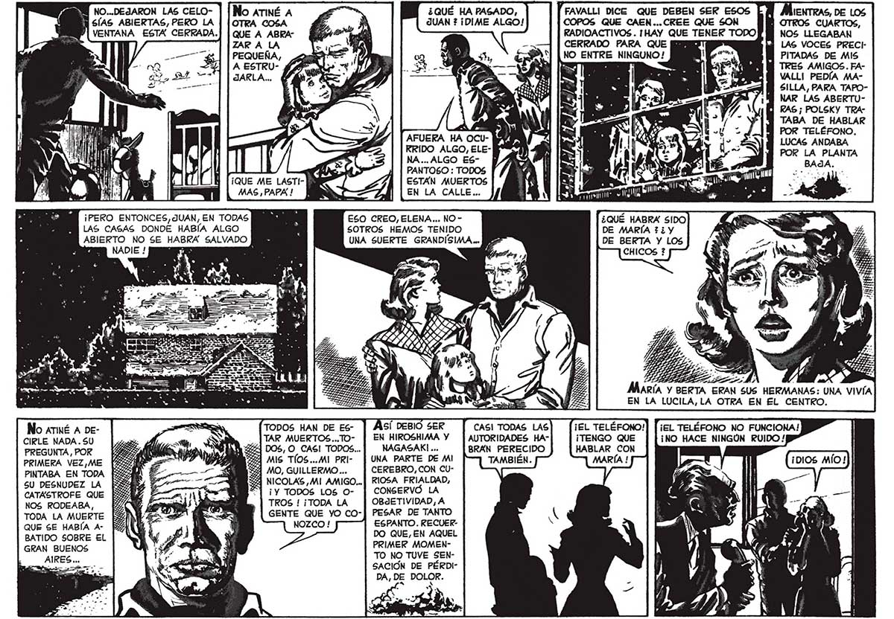

NO...DEJARON LAS CELO- E ¿QUÉ HA PASADO, "FAVALLI DICE QUE DEBEN SER ESOS be ABIERTAS, PERO LA Es ¡ENTRAS, DE LOS E : JUAN ? ¡DIME ALGO! COPOS QUE CAEN... CREE QUE SON VENTANA ESTA CERRADA. az e i OTROS CUARTOS, RADIOACTIVOS . IHAY QUE TENER TODO NOS LLEGABAN CERRADO PARA QUE Ja NO ENTRE NINGUNO! LAS VOCES PRECIPITADAS DE MIS TRES AMIGOS. FAVALLI PEDÍA MASILLA, PARA TAPONAR LAS ABERTURAS ; POLSKY TRA| | e AY j TABA DE HABLAR AFUERA HA ocu- PMA) el [AS NS aa ES TOS IELÉRONO. KRIDO ALGO, ELE- Y - , POR LA PLANTA NA... ALGO ES- hi e . BAJA | 4 | PANTOSO : TODOS 194 mn ¿nt ol ¡QUE ME LASTI- ESTAN MUERTOS | E MAS, PAPA! | EN LA CALLE... EUA ATI ES pas p n L ponian! 7 ¡PERO ENTONCES,dUAN, EN TODAS ESO CREO, ELENA... NO LAS CASAS DONDE HABÍA ALGO , SOTROS HEMOS TENIDO ABIERTO NO SE BES SALVADO UNA SUERTE GRANDISIMA... BP ¿QUE HABRA SIDO DE MARÍA 7 ¿ Y DE BERTA Y LOS CHICOS ? a d RS $ MARÍA Y BERTA ERAN SUS HERMANAS: UNA VIVÍA EN LA LUCILA, LA OTRA EN EL CENTRO. No armé A DE- TODOS HAN DE ES- ASÍ DEBIO SER : 1 MEL TELÉFONO NO FUNCIONA! CIRLE NADA. SU ! SN TAR MUERTOS...TO- | EN HIROSHIMA Y | AUTORIDADES HA- : ¡NO HACE NINGÓN RUIDO! PREGUNTA,POR | Sd IA ZE DOS, O CAS! TODOS... NAGASAKI ... BRAN PERECIDO PRIMERA VEZ,ME UE ==" 2 DS SA MIS TÍOS...MI PRI- | UNA PARTE DE MI TAMBIÉN. PINTABA EN TODA E $ MO, GUILLERMO... CEREBRO, CON CUGU DESNUDEZ LA h ade an 5 NICOLAS ,MI AMIGO... | RIOSA FRIALDAD, CATASTROFE QUE E Era np as” ¿3 ¡Y TODOS LOS O- | CONSERVO LA NOS RODEABA, E aos A TROS ! ¡TODA LA OBJETIVIDAD, A TODA LA MUERTE NW - E GENTE QUE YO CO-] PESAR DE TANTO QUE SE HABÍA A- Úl ESPANTO. RECUERBATIDO SOBRE EL a. y DO QUE, EN AQUEL GRAN BUENOS AA PRIMER MOMEN_J % TO NO TUVE SEN! SACIÓN DE PÉRDIDA, DE DOLOR.
